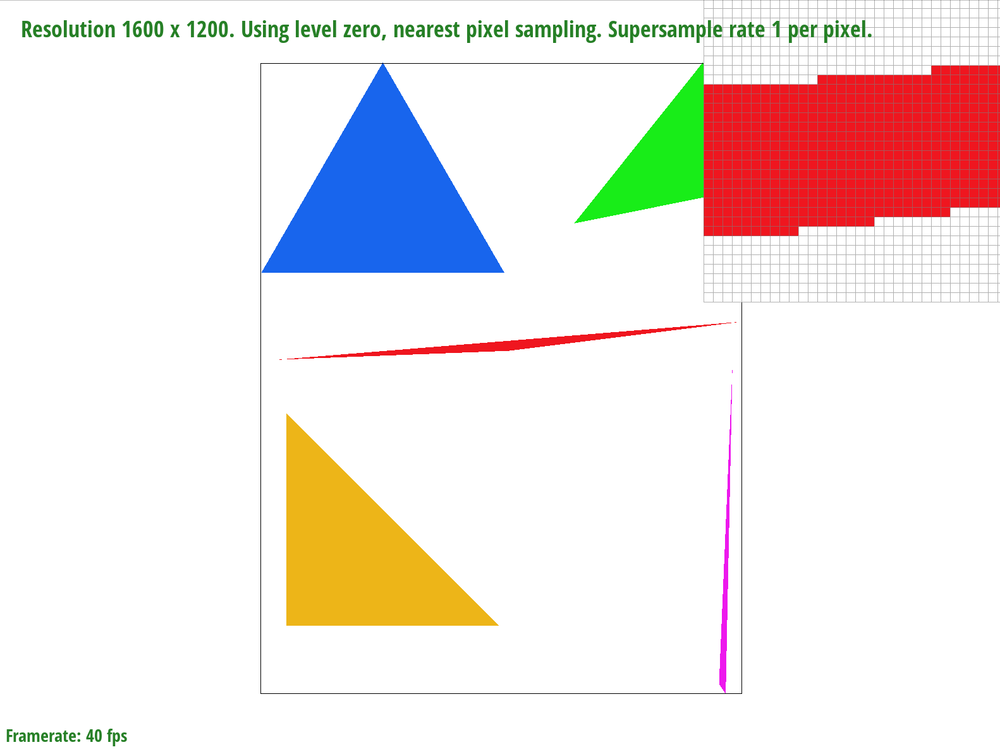
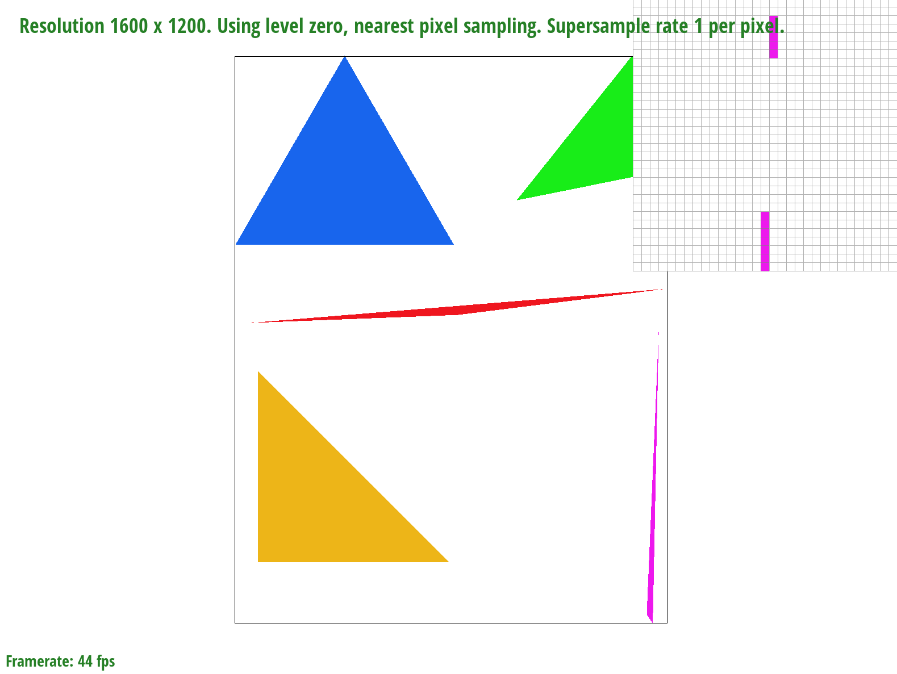
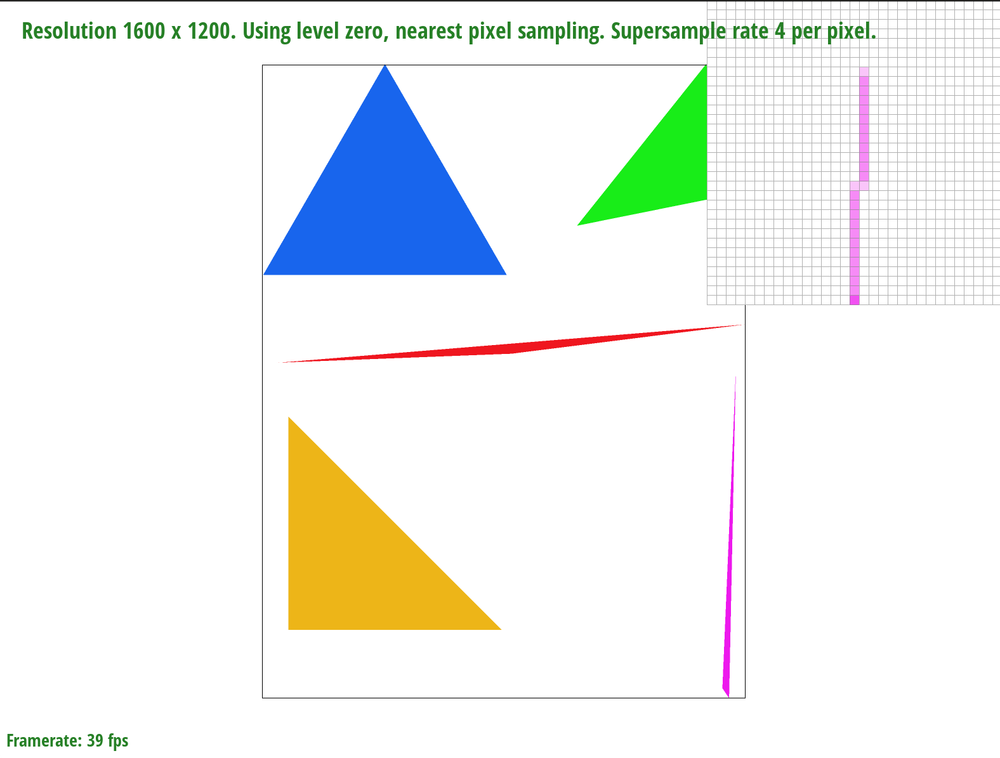
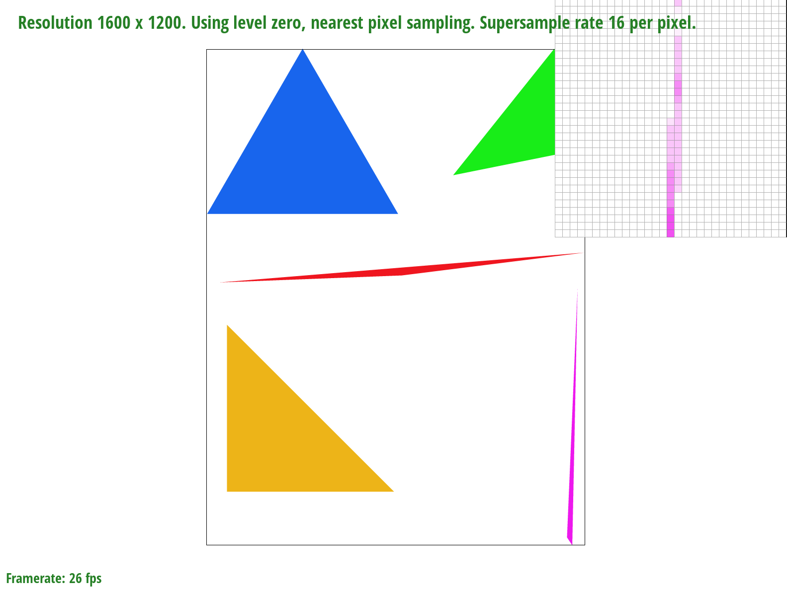
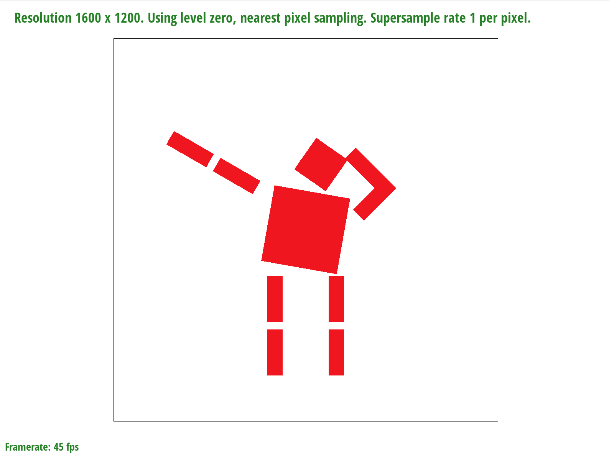
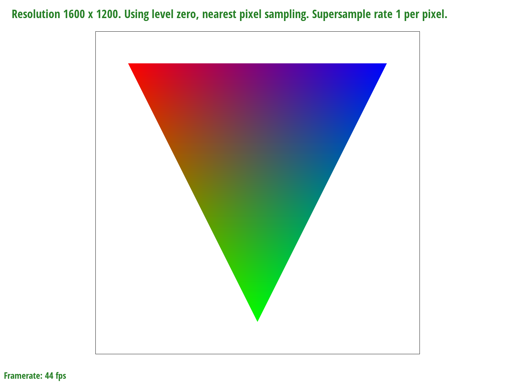
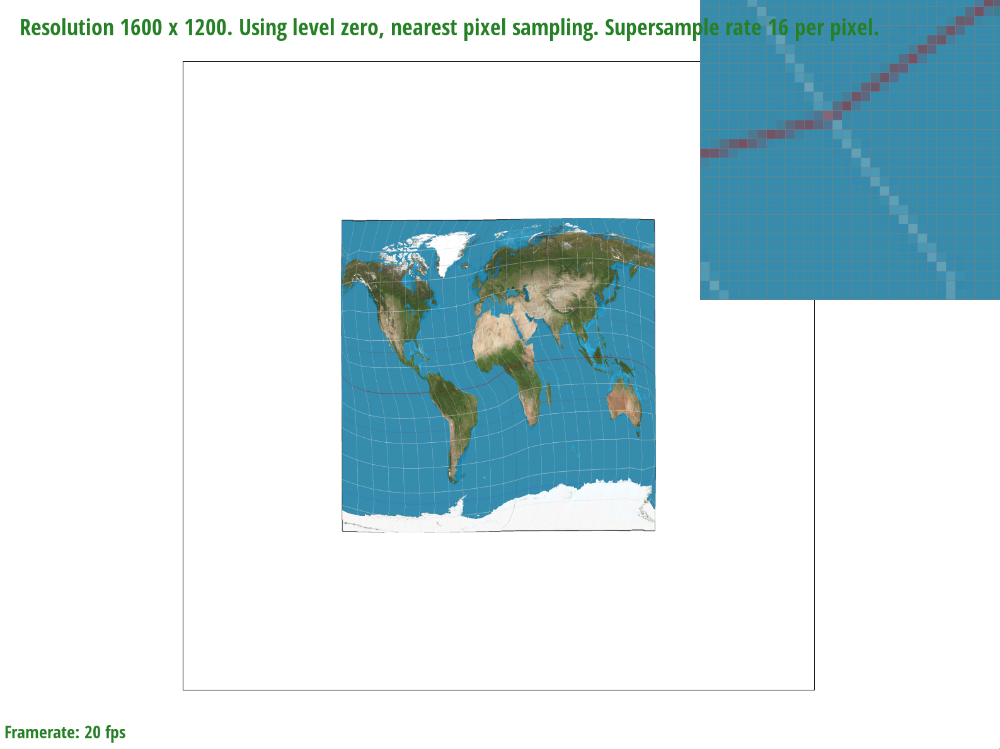
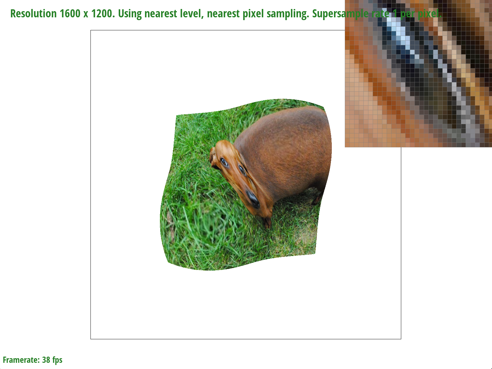
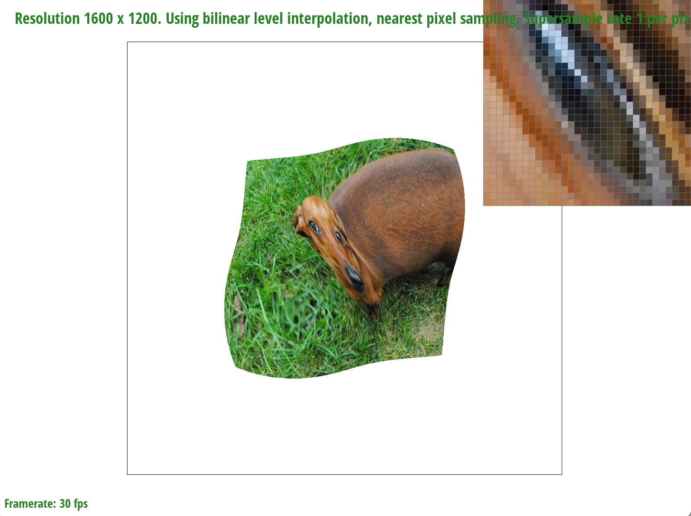

Overview
In this homework, we constructed and refined key components of the rasterization pipeline. We first started by drawing triangles, which had many visual artifacts due to artifacts. To combat this, we implemented supersampling to antialias. Another integral part of this project was texture mapping. Using bayercentric coordinates and mipmaps, we were able to render texture mappings with little aliasing.
Section I: Rasterization
Part 1: Rasterizing single-color triangles
We begin by finding the bounding box of the triangle. We do this by finding the min/max x and y coordinates from the three given vertices.
Next, we loop through each point in our bounding box and check if the center of each sample point is within the triangle. We use our helper
method line_test to check if the given point is/on the halfplane and take into account the passed-in order of the vertices
(clockwise or counterclockwise). If the sample point is within the triangle, we use fill point to color it correctly. Our
algorithm is no worse than one that checks each sample within the bounding box of the triangle because that is exactly what we are doing.
In both the bounding box algorithm and our algorithm, the runtime is O(n^2), where n = width of bounding box.
|

|
Part 2: Antialiasing triangles
We began by making sure the size of the supersample vector sample_buffer is correctly scaled by
sample_rate whenever it is resized in methods like set_framebuffer_target and
set_sample_rate. This ensures that if the sample_rate is for example 4, the sample_buffer
is 4 times as big to account for our supersampling. Then, we updated rasterize_triangle by scaling all the point
coordinates by sqrt(sample_rate). We also stopped calling fill_pixel in rasterize_triangle
and instead manually fill in sample_buffer because we wanted to make sure lines and points aren't supersampled. Instead,
we updated fill_pixel so that it fills the cells corresponding to the framebuffer all with the point or line color.
The final step in the antialiasing process is to average the supersample back down into our original framebuffer size.
To do this, we updated resolve_to_framebuffer so that it loops through each sqrt(sample_rate) x sqrt(sample_rate)
square in the sample_buffer and averages their color values. Then, this averaged color is placed in the corresponding cell of the
framebuffer.
Supersampling is useful because it allows us to antialias our triangles. Again, we do this by sampling multiple points within the original
and then averaging their colors to get a more "blended" look.
|

|

|
|

|
Part 3: Transforms
As seen below, we are trying to make the cubeman dab. We rotated the left arm to point upwards and rotated the right arm to point upwards as well. We also made the forearm of the right arm rotate inwards so the arm bends. Lastly, We rotated the head and torso so that the cubeman looks like he is leaning into the pose.
|

|
Section II: Sampling
Part 4: Barycentric coordinates
Barycentric coordinates are used for interpolation. We can think of them as a list of weights corresponding to a list of attributes which allows us to interpolate values. In our example, these attributes are the three colors at the three vertices of a triangle. We can get the barycentric coordinates of each pixel within the triangle, which tells us how much weight to assign to each vertex color. These coordinates then allow us to linearly interpolate the colors to get a blended triangle.
|

|
Part 5: "Pixel sampling" for texture mapping
Pixel sampling in general is simply sampling at a specific point to use an attribute in some way. We applied this concept to texture maps by converting to the corresponding texture map coordinates and getting the color from there. The first type of sampling was nearest sampling, which means we simply found the closest discrete point in the texture map and applied its color to our point. The second type of sampling was bilinear sampling, which finds the average color of the four discrete neighbors and uses lerping to weight the colors based on the distance of the point from those neighbors.
|
|

|
|

|
|
Note the large difference in aliasing between nearest and bilinear sampling when the supersampling rate is 1. This large difference is due to the bilinear sampling interpolating the 4 nearest colors closest to that point rather than just taking the color nearest the point. This reduces aliasing because it reduces the frequency changes between pixels. When the supersampling rate is increased to 16, the difference in aliasing is minimal between nearest and bilinear sampling because the supersampling is already reducing aliasing so much that differing the sampling method has minimal effect. Also note the difference between bilinear sampling at a supersample rate of 1 and nearest sampling at a supersample rate of 16. There is a noticeable amount of reduced aliasing in the supersampling rate of 16 because, as noted before, the antialiasing effect of increasing the supersampling rate to 16 is very significant.
Part 6: "Level sampling" with mipmaps for texture mapping
Level sampling is estimating the width of the texture footprint to decide how detailed of a color
to apply to our point. In terms of texture mapping, we converted to u,v coordinates and used the derivatives
to calculate which level of texture map we wanted to use for a specific point. Supersampling takes more memory and
is slower since we need to loop through a larger sample buffer; however, its antialiasing effects
are quite powerful, especially when we get to a supersample rate of 16. Level sampling technically also takes more memory
since we need to store different levels of texture maps; however, note that these sizes are a geometric sequence
so the additional memory is not too significant. The speed change is also minimal since we can quickly access a point on any
level texture map; the antialiasing effects are also good for nearest and bilinear. Finally, pixel sampling only requires a single
texture map and is very fast since we are just accessing that single map. In terms of antialiasing, bilinear sampling is quite good
since we can get the weighted average of the four closest neighbors.
Supersampling at a higher rate has the best antialiasing effects but we must make tradeoffs in terms of speed and memory.
Pixel and level sampling on texture maps are a good way to get great antialiasing effects without using as much memory
or compensating for speed.
|
|

|
|

|
|

|
Note that not all the texture sampling combinations are listed, but all the benefits of changing them independently and in combination with each other can be seen with the quality of the eye rendering. Starting with our level method being zero, sampling method being nearest, and the supersampling rate being 1, we get the most aliasing as expected. Changing the level method has noticeable effects on aliasing while keeping the other factors constant. When changing the sampling method from nearest to bilinear, its antialising effects as described in task 5 are displayed. As commonly seen earlier, increasing the supersampling rate to 16 also gave a noticeable difference in aliasing as well.
Section III: Art Competition
If you are not participating in the optional art competition, don't worry about this section!